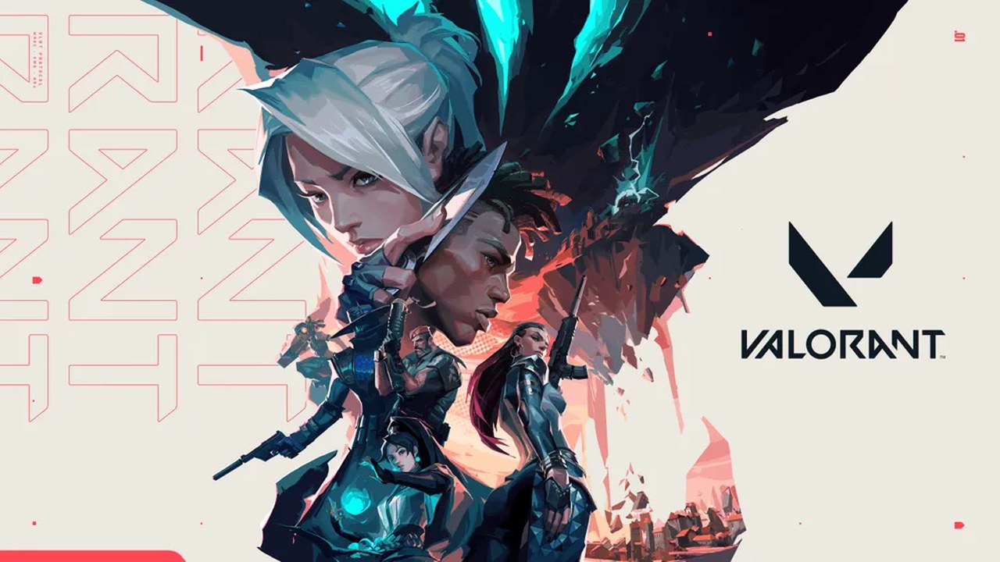

기준일 2026년 10월 14일 (수)커버기간: 10/13(화) 오전 – 10/14(수) 오전스팀·웹 11시대까지 수집
핵심워독스 시즌 2가 내일 열리며 진행도가 초기화된다는 보도가 나왔습니다.스팀아크 레이더스 토론 첫 15건 중 9건이 PvE·PvP입니다. 배틀필드 6은 차트 60위에서 25위로 올랐습니다.국내인벤 오버워치 패치노트 글이 1,034회 읽혔습니다. 등록 시각은 10월 14일 오전 06:56입니다.일정워해머 40,000: 볼트건 2가 오늘 나옵니다. 워독스 시즌 2는 내일인 10월 15일에 열립니다.
측정 주의워독스 토론 목록이 어제 판과 같은 값이라 변화 지표로 쓰지 않았습니다.수요일 판이라 어제 오전부터 오늘 오전까지 묶었습니다.인벤은 최신 목록 주소로 09:53 글까지 열었습니다.한국어 평가 수와 데드록 토론은 열지 못했습니다.
근거 표기KR·기사국내 매체글로벌·기사해외 매체커뮤니티원문 직접 확인공식공식 공지지표수치국내 반응 미확인국내 소스 미확인
게임
이벤트 / 업데이트
날짜
유형
커뮤니티 반응 · 관전 포인트
오버워치2패치노트 글 반응
인벤 오버워치 자유게시판 최신 15글을 확인했습니다.10월 14일 09:53에 올라온 글까지 열었습니다.패치노트 글은 06:56 등록 뒤 조회 1,034회였습니다.
10/14글 09:53
패치 · 국내 반응
커뮤니티지표 인벤 최신 15글에서 눈에 띈 것은 세 가지입니다.① 패치노트 글이 조회 1,034회로 최고였습니다. 추천 5개, 댓글 10개로 댓글도 가장 많았습니다.② 영웅 버프·밸런스 이야기가 15글 중 4건이었습니다.③ 유저 수준과 매칭 불만 글은 3건을 차지했습니다.인벤 오버워치 자유게시판
스페셜포스 리마스터정식 서비스 뒤 국내 반응
스페셜포스는 드래곤플라이의 국내 IP입니다.시작일은 Inven Global 기사를 따랐습니다.루리웹 신설 게시판 14건에는 슈터가 없었습니다.
10/14정식 9/17
서비스 · 국내 IP
글로벌·기사지표 국내 반응은 루리웹에서 글 한 건만 확인했습니다.① 제목에 "반가움과 아쉬움 그 사이"라는 말이 있습니다.② 댓글은 5개이지만 글 본문은 열지 못했습니다.제목만으로는 반응이 반가움인지 아쉬움인지 알 수 없습니다.Inven Global 정식 출시 · 루리웹 메인

발로란트챔피언스 상하이
VLR은 T1이 JDG를 탈락시켰다고 전했습니다. 상하이 대회에 남은 팀이 없다고 했습니다.해외 매체 세 곳이 부진한 성적을 보도했습니다.
10/1416일 결승
e스포츠 · 국내 반응 미확인
글로벌·기사국내 반응 미확인 아카라이브와 인벤 발로란트는 오늘 열어 보지 않았습니다. 그래서 한국 팬의 반응은 확인하지 못했습니다.① 해외 제목 세 곳은 모두 중국의 부진을 다뤘습니다. VLR은 상하이에 중국 팀이 더 없다고 적었습니다.② 16일 상위 결승은 15시에 Vitality 대 LOUD입니다. 하위 3라운드는 저녁 6시부터 100 Thieves 대 G2가 맞붙습니다. 18일 그랜드 파이널은 어제 판 일정 그대로 열립니다.VLR 중국 팀 탈락 · The Spike 결과
04
글로벌 포커스
근거는 스팀 커뮤니티 토론 원문과 playnews·Inven Global·mp1st 등 매체, 그리고 공식 안내문입니다.
오늘 연 해외 커뮤니티확인워독스 · 아크 레이더스 · 배틀필드 6오전 11시대 확인 · 일반 토론 방 첫 15건 제목만 읽음 · 본문은 열지 못함확인스팀 최다 플레이 차트: 데드록 4위 · 아크 레이더스 6위 · 워독스 8위 · 오버워치 13위 · 마블 라이벌즈 14위 · 에이펙스 19위 · 배틀필드 6 25위제외워독스 토론 목록은 어제 판과 같은 값이라 변화 지표로 쓰지 않음미열람레인보우 식스 시즈 · CS2 · 에이펙스 · 데스티니 2 · THE FINALS · 데드록 토론축 없음발로란트와 서든어택은 스팀 미등록
게임
이벤트 / 업데이트
날짜
유형
커뮤니티 반응 · 관전 포인트
워독스 (WARDOGS)시즌 2 앞 토론
playnews는 시즌 2가 10월 15일 열린다고 전했습니다.랭크, 무기 해금, 치장이 초기화됩니다.개발사는 초기화가 없으면 많이 한 사람이 다 열어 버려 할 일이 사라진다고 설명했습니다.
10/14시즌 2 10/15
앞서 해보기 · 시즌 2
커뮤니티글로벌·기사지표 스팀 일반 토론 첫 15건은 제목만 읽었고 본문은 열지 못했습니다. 활성 글은 1,904건입니다. 이 목록은 제목과 답글 수가 어제 판과 모두 같습니다. 캐시일 수 있어 변화 지표로 쓰지 않았습니다.① 팀·치트 팀 시스템과 치터를 향한 불만 제목이 보입니다. "WARDOGS Is a Joke Its Team System Is Even Worse"(답글 556개)와 "Cheaters taking over"(답글 284개)가 그 예입니다.② 초기화 시즌 2 초기화를 걱정하는 제목이 이어집니다. "If They Wipe My Cash and Progression, I'm Leaving Negative Feedback"(답글 51개)와 "Whats the point in wipes?"(답글 30개)가 그 예입니다.③ 지표 차트 8위입니다. 현재 97,271명이고 오늘 최고는 138,210명입니다.워독스 일반 토론 · playnews 시즌 2 초기화 · 스팀 최다 플레이 차트
아크 레이더스PvE 테스트 이틀째
Inven Global 기준 PvE 테스트는 13일부터 20일까지입니다.선택 토글 방식이고 플레이어끼리 피해가 없습니다.전리품 가치는 낮고 영구 도입은 보장되지 않습니다.
10/14PvE 10/13~20
테스트 · PvE
커뮤니티글로벌·기사지표 스팀 일반 토론 첫 15건은 제목만 읽었고 본문은 보지 못했습니다. 활성 글은 1,872건이고 어제 판은 1,859건이었습니다. 15건 중 9건이 PvE와 PvP 이야기입니다.① PvE 반대 PvE 모드에 부정적인 제목이 보입니다. "Scrap pve mode"(답글 103개)와 "The PvE mode is awful and is killing PvP."(답글 41개)가 그 예입니다.② 찬반 찬성과 질문과 불만이 함께 보입니다. "PvE is the future."(답글 22개), "Will the PvE be permanent at some point?"(답글 17개), "toxicity in PvE raids"(답글 12개)입니다.③ 지표 "ARC Raiders Is a Complete Joke"(댓글 265개)는 어제 판에서 215개였습니다. 차트 6위이고 현재 131,068명, 오늘 최고는 164,228명입니다.아크 레이더스 일반 토론 · Inven Global PvE 테스트 · 스팀 최다 플레이 차트
배틀필드 6시즌 5 업데이트 반응
mp1st는 시즌 5가 13일 열린다고 전했습니다.인벤은 14일로 적었고 EA 안내문에는 시작일이 없습니다.KeenGamer 제목은 라스베이거스 스트립과 51구역을 꼽았습니다.
10/14서구 10/13
시즌 · 날짜 불일치
커뮤니티글로벌·기사지표 스팀 일반 토론 첫 15건 중 고정글 2건을 빼고 13건의 제목만 읽었습니다. 활성 글은 1,404건이고 어제 판은 1,334건이었습니다.① 업데이트 첫인상을 묻고 REDSEC 변경에 의문을 두는 제목입니다. "How are your first impressions of the update?"(답글 37개)와 "why are most of the changes for season 5 for redsec?"(답글 12개)가 그 예입니다.② 불편 다운로드와 SOFLAM 조정, FSR 멈춤을 다룬 제목입니다. "Insanely slow update download"(답글 10개), "What's with the SOFLAM nerf?"(답글 0개), "FIX THE DAMN FSR FREEZE"(답글 0개)입니다.③ 지표 고정글 "Status and Known Issues"는 10월 13일에 갱신됐습니다. 차트 25위이고 어제 판은 60위였습니다. 현재 38,960명, 오늘 최고는 59,238명입니다.배틀필드 6 일반 토론 · mp1st 시즌 5 · EA 시즌 5 안내 · 스팀 최다 플레이 차트
05
신작 출시·발표
최근 나온 슈터와 곧 나올 슈터를 한 표에 모읍니다. 날짜는 스팀 상점과 IGDB 캐시를 대조했습니다. 루리웹 신설 게시판 14건에서 슈터로 확인한 것은 없었습니다.
무엇이playnews 보도에 따르면 시즌 2는 10월 15일에 열립니다.랭크와 무기 해금과 치장이 초기화된다고 전했습니다.앞서 해보기를 연 지 약 한 달 뒤라 불만이 있다고 합니다.첫 주말 기록은 200만 장 이상입니다.
맥락Bulkhead는 초기화가 없을 때의 문제를 이렇게 설명합니다.많이 한 사람이 모든 것을 열고 신규 이용자를 이기는 일만 남는다는 것입니다.스팀 토론 "If They Wipe My Cash and Progression, I'm Leaving Negative Feedback"은 답글이 51개입니다."Whats the point in wipes?"는 30개이고 활성 토론은 1,904건이며 제목과 수치가 어제와 같아 캐시일 수 있습니다.
우리 운영 교훈
공식 공지 원문으로 확인하기 전에는 단정하지 않습니다. 어제 판은 매체별로 설명이 엇갈린다고 적었습니다.
시즌 2 직후 스팀 평가 변화를 확인합니다. 초기화에 반대하는 토론 제목이 평가로 이어지는지 봐야 합니다.
한국어 평가는 오늘 열지 못했습니다. 토론 본문도 읽지 못해서 반응의 결은 말할 수 없습니다.
MID · 아크 레이더스 PvE 테스트
아크 레이더스 PvE 테스트가 10월 13일부터 20일까지 열립니다.
무엇이PvE 테스트는 10월 13일부터 20일까지입니다.스팀 토론 첫 15건 중 9건이 PvE와 PvP 이야기입니다.차트는 6위이고 현재 131,068명입니다.인벤 글로벌 기준으로 영구 도입은 보장되지 않았습니다.
맥락"Scrap pve mode"는 답글이 103개입니다."The PvE mode is awful and is killing PvP."는 41개입니다."PvE is the future."는 22개이고 "Will the PvE be permanent at some point?"는 17개입니다.반대와 찬성 제목이 함께 있으나 본문은 읽지 못했습니다.
우리 운영 교훈
찬반이 함께 있어 한쪽으로 단정하지 않습니다. 답글이 반대 쪽 103개와 41개, 찬성 쪽 22개입니다.
영구 도입을 묻는 글 17개에 답할 준비를 합니다. 인벤 글로벌 기준으로는 보장된 약속이 없습니다.
토론 본문은 읽지 못했습니다. 제목만으로 나눈 분류라 잠정으로 봐야 합니다.
MID · 배틀필드 6 시즌 5
배틀필드 6 시즌 5 시작일이 서구 13일과 인벤 14일로 엇갈립니다.
무엇이시즌 5 시작일이 서구는 13일, 인벤은 14일입니다.EA 안내문에는 시작 날짜가 적혀 있지 않습니다.차트는 60위에서 25위로 올랐습니다.활성 토론은 1,334건이던 것이 1,404건으로 늘었습니다.
맥락"How are your first impressions of the update?"는 답글이 37개입니다."Insanely slow update download"는 10개입니다."why are most of the changes for season 5 for redsec?"는 12개입니다.REDSEC 위주라는 불만으로 읽히나 본문은 읽지 못했습니다.
우리 운영 교훈
시작 시각은 EA 업데이트 노트로 확인합니다. 서구와 인벤의 날짜가 하루 어긋나 있습니다.
다운로드가 느리다는 글 10개의 추이를 봅니다. 시즌 시작 직후에 늘면 안내가 필요합니다.
본문은 읽지 못했습니다. REDSEC 불만 해석은 제목에 기댄 추정입니다.
08
CM 액션 제안
1
워독스는 시즌 2 시작 전에 초기화 범위부터 확인합니다.
① 시즌 2가 열리는 15일 전에 스팀 공식 공지 원문을 읽습니다.랭크와 해금과 치장이 범위에 드는지 확인해 안내 문구를 정합니다.② 초기화 걱정 글 51개와 30개는 본문을 읽고 분류합니다.③ 시즌 2 시작 직후에 같은 목록을 다시 셉니다.
2
아크 레이더스는 종료 전에 찬반 글을 읽고 분류합니다.
① 테스트가 끝나는 20일 전에 "Scrap pve mode" 답글 103개를 본문까지 읽고 분류합니다."PvE is the future." 같은 찬성 글 22개도 같은 방식으로 읽습니다.② "Will the PvE be permanent at some point?" 17개에 대한 영구 도입 입장을 확인합니다.Inven Global 기사와 공식 공지에 공식 입장이 있는지 봅니다.③ 종료일 전날 같은 목록을 다시 셉니다.
유의사항방법스팀 토론은 일반 토론 방 첫 15건 제목만 오늘 오전 11시대에 읽었습니다. 인벤은 ?p=1 주소로 09:53 글까지 열어 신선도를 확인했습니다.캐시워독스 토론 목록은 어제 판과 제목과 답글 수가 모두 같아 변화 지표로 쓰지 않았습니다. 볼트건 2 상점의 남은 시간 표시도 어제 값입니다.불일치배틀필드 6 시즌 5 시작일이 서구 13일, 인벤 14일로 엇갈리고 EA 안내문에는 날짜가 없습니다. IGDB 캐시와 스팀 날짜 어긋남은 0건입니다.미확인발로란트 국내 반응, 한국어 평가 수, 데드록 토론, 마이코펑크 평가, 스페셜포스 글 본문은 확인하지 못했습니다.이월VCT, 서든어택, PMPS, 오버워치 콜라보 일정은 어제 판을 이어 썼습니다.